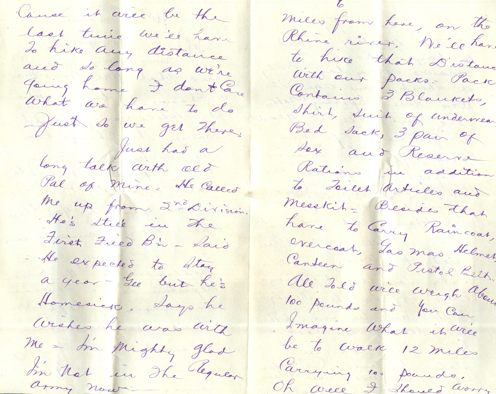
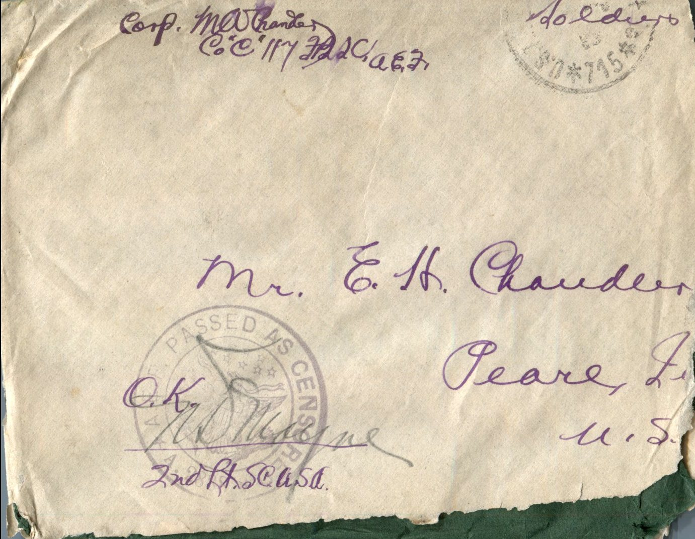
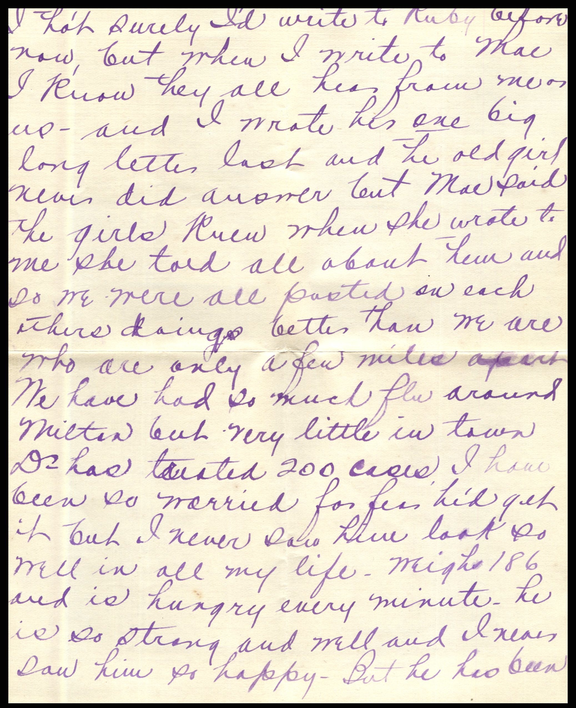
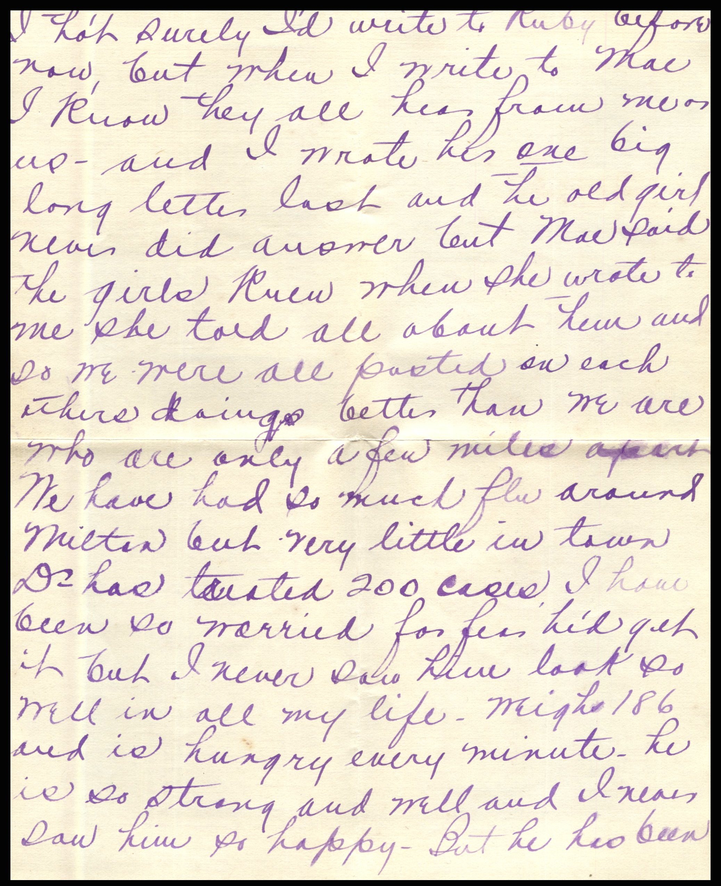
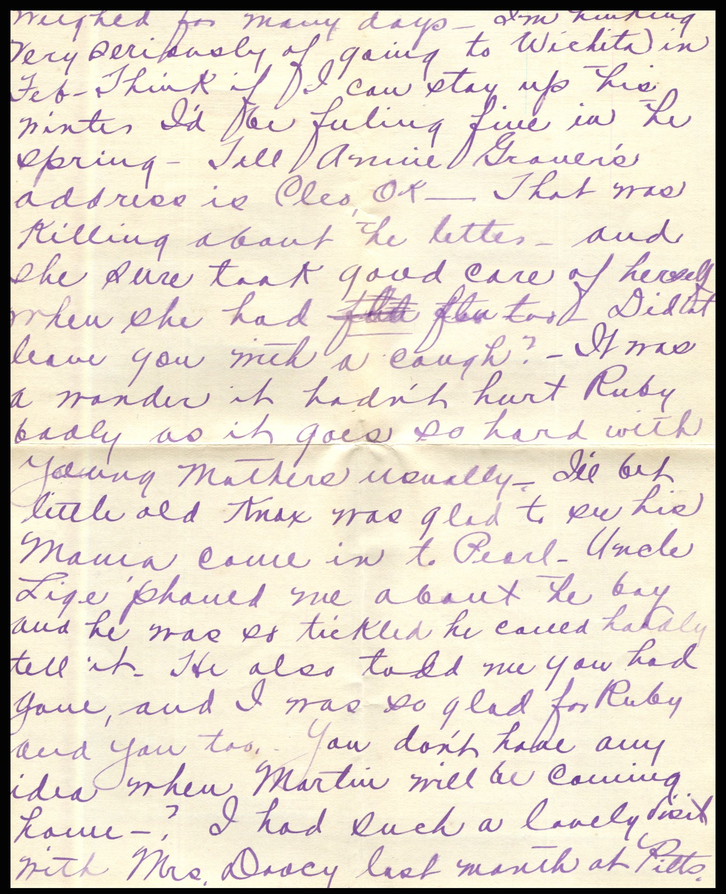
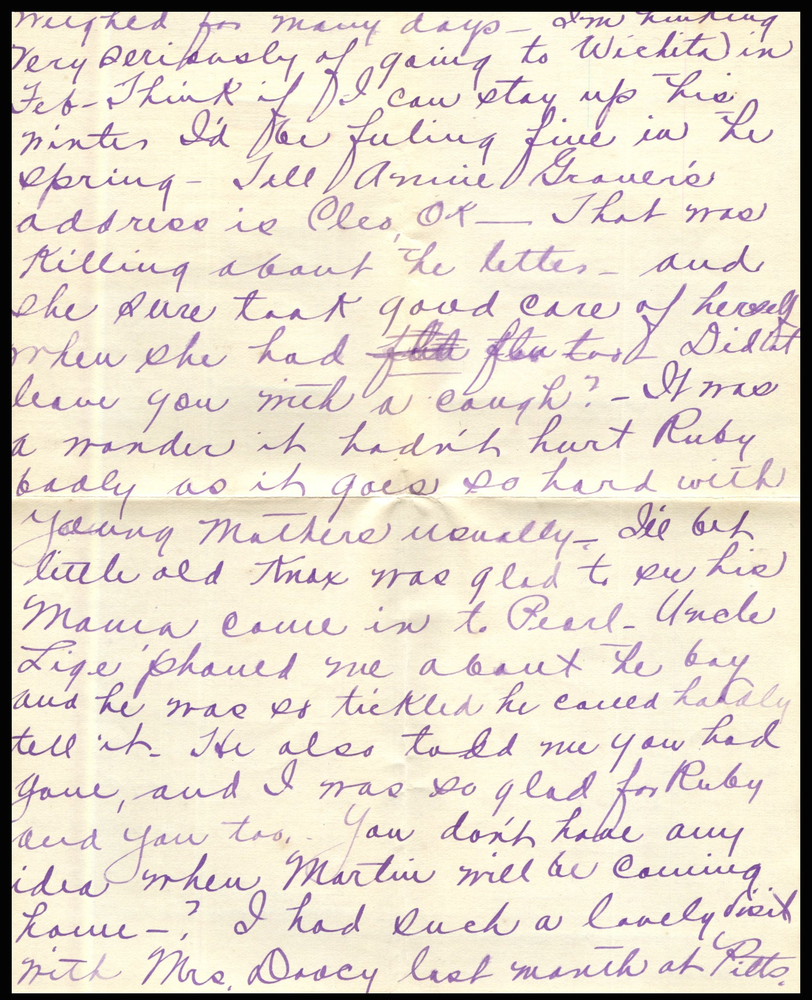

From: Martin Chandler, To: Elijah H. Chandler and Family
Mailed From: Ahrweiler, Germany on March 26, 1919
Corp. M.W. Chandler
Co "C" 117 H.S.C.
A.E.F.
Mr. E.H. Chandler
Pearl, Ill.
U.S.A.
Ahrweiler, Germany March 26, 1919
Dearest Papa, Mama, and All
No mail since last writing. Guess I wont write very many more times from Germany . Division headquarters leaves on first train April 2nd for Brest. Rest of the division will follow and I think we will all be out of here by the 6th. Don't know how long we will lay in Brest but they say we will stay there no longer than is necessary to embark. Oh Lordy but I'll certainly be glad when I get on that ship and know that I'm really on my way home. All men are Classified here and will be sent to different camps in the States to be demobilized. I'm listed to go to Camp Bowie, Texas because I enlisted in El Paso. I tried to get it changed here but couldn't but am going to try as soon as we get to the states. I certainly don't want to go to Texas to be discharged and then have to pay carfare home. The rest of the signal camps, lot rather, those who enlisted at points in Central Miss Valley will be demobilized at Camp Taylor Kentucky. that's where I'd like to gland thats where I'm going to try and get them to send me cause then I could drop in on Lorin and Grace and it wouldn't take me long to get home from there. I rather dread the ride to Brest in Box cars but we'll be "Homeward Bound" so it won't be so bad.
Guess I forgot to enclose that speech the other day cause I found it in my pocket today. Will enclose it together with a letter from Gen. pertaining to our Commanding General.
Understand we get to keep our gas masks and helmet. I'm certainly going to bring mine home. We are going to be paid off before we leave ere but I've only got about 10/000 cummings. Had to pay for suit of underwear out of this pay. I left it somewhere or another and they charged me about 6.00 for it. They sure stick a man when he loses anything. I'll be glad to have the 10 bucks though cause we wont have much to at on the trip to Brest and that will give me a chance to buy cakes etc while going through France. They charge like the dickens in France and I expect I'll hit the states dead broke but I'll be glad to get there under any circumstances.
Everything is in readiness for the divisions departure. The general has already left for Brest. We will be deloused before boarding train at Remagen. Remagen is about 12 miles from here, on the Rhine river. We'll have to hike that distance with our packs. Pack contains 3 blankets, shirt, suit of underwear, bed sack, 3 pair of socks and reserve rations in addition to toilet articles and mess kit. Besides that have to carry rain coat, overcoat, gas mask helmet, canteen, and pistol belt. All told will weight about 100 pounds and you can imagine what it will be to walk 12 miles carrying 100 pounds. Oh well I should worry cause it will be the last time we'll have to hike any distance and so long as we're going home I don't care what we have to do just so we get there.
Just had a long talk with old pal of mine. He called me up from 2nd Division. He's still in the First Field B'n. Said he expects to stay a year. Gee but he's homesick. Says he wishes we was with me. I'm mighty glad I'm not in the regular army now.
Been having some rotten weather past 10 days. Rains or snows every day. Only a short time ago it was nice spring weather. Gee but I'll be glad to get out of this country. The German people hate to see us leave because they've received pretty good treatment at our hands.
Well I must close and go to work. Am on duty tonight at Message Center. Expect the Message Center will be one of the last details to leave here. Hope I'm in the states by time this reaches you. Will wire you when I arrive.
Lovingly,
Martin


 From: Martin Chandler, To: Lorin, Grace, and Audrey
Mailed From: Ahweiler, Germany on April 3, 1919
From: Martin Chandler, To: Lorin, Grace, and Audrey
Mailed From: Ahweiler, Germany on April 3, 1919


 
 

 From: Vinnie, To: Jeanette Knox Chandler
Mailed From: Milton, Ill. on January 7, 1919
From: Vinnie, To: Jeanette Knox Chandler
Mailed From: Milton, Ill. on January 7, 1919